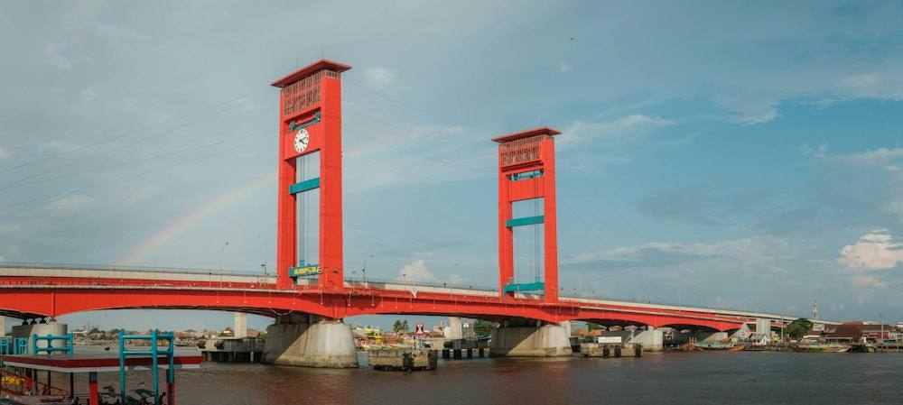

Contoh
Contoh pengumuman layanan
Informasi perubahan layanan akan ditampilkan di sini setelah diverifikasi petugas.
Baca selengkapnya
Baca syarat dan langkahnya sebelum datang ke kantor kecamatan. Semua dalam bahasa yang mudah dipahami.
Nama layanan adalah contoh umum. Syarat resmi menunggu verifikasi dari kantor kecamatan.
Pengantar dari kecamatan untuk pengurusan dokumen kependudukan.
Lihat syarat →Keterangan tempat tinggal warga di wilayah Kecamatan Kertapati.
Lihat syarat →Keterangan bagi pelaku usaha kecil yang berusaha di wilayah kecamatan.
Lihat syarat →Keterangan untuk keperluan bantuan pendidikan, kesehatan, atau sosial.
Lihat syarat →Rekomendasi untuk acara warga seperti hajatan atau kegiatan lingkungan.
Lihat syarat →Pengesahan salinan dokumen yang diterbitkan kecamatan.
Lihat syarat →Informasi perubahan layanan akan ditampilkan di sini setelah diverifikasi petugas.
Baca selengkapnya
Ringkasan kegiatan kecamatan akan ditampilkan di sini. Foto hanya ilustrasi.
Baca selengkapnya
Informasi penting untuk warga akan ditampilkan di sini setelah disahkan.
Baca selengkapnya
Kecamatan Kertapati berada di Kota Palembang, Sumatera Selatan, di tepi Sungai Musi dan Sungai Ogan. Wilayah ini dikenal dengan Stasiun Kertapati.
Sejarah, visi-misi, dan data wilayah menunggu verifikasi.
Baca profilDaftar ini perlu diverifikasi oleh kantor kecamatan.
Sampaikan lewat formulir. Pada demo ini formulir belum terhubung ke petugas.